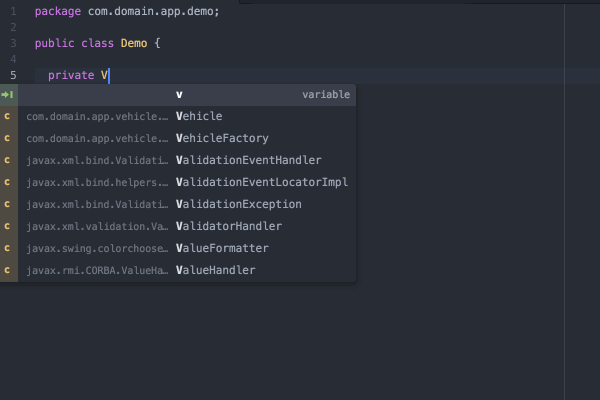
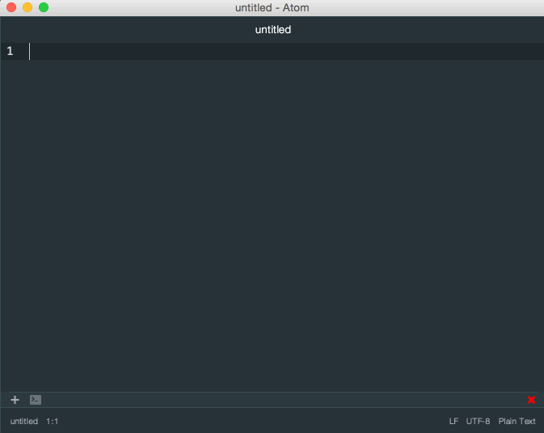

Atom 介绍
Atom 是 Github 开源的文本编辑器，这个编辑器完全是使用Web技术构建的（基于Node-Webkit）。启动速度快，提供很多常用功能的插件和主题，可以说 Atom 已经足以胜任“半个 IDE”了。
个人感觉有如下几个优点：
- 多平台支持（Windows、Mac、Linux）
- 界面美观、现代化,使用舒适
- 多文件管理（Atom 提供了文件树列表的功能）
- 设置管理很方便，不用像 Sublime 需要自己手动安装第三方管理插件
- 由 GitHub 打造，社区活跃,免费使用
- 支持各种编程语言的代码高亮和代码补全（部分需要插件支持）
- 原生 Git 的支持
- 原生 Markdown 支持（实时预览、代码高亮，比 Mou 的代码高亮效果好很多）
- 主题插件越来越丰富
Atom 的安装使用
安装设置
Atom 官网下载地址：https://atom.io。
Atom 文本编辑器支持 Windows、Mac、Linux 三大桌面平台，完全免费，并且已经在 GitHub 上开放了全部的源代码。功能设置和插件安装直接在设置选项里面即可设置，默认的很多设置选项已经很不错了，也不需要太多地修改。主题插件的安装也很简单。点击顶部菜单 File -> Settings。在出现的下图安装界面中，输入自己的需要安装的主题或者插件的部分名称即可匹配搜索，点击 INSTALL 即可安装成功使用了（主题需要切换到 Themes 选项卡上）

原生 Markdown 书写和预览
Markdown 是一种轻量级的「标记语言」，它的优点很多，目前也被越来越多的写作爱好者，撰稿者广泛使用。看到这里请不要被「标记」、「语言」所迷惑，Markdown 的语法十分简单。常用的标记符号也不超过十个，这种相对于更为复杂的 HTML 标记语言来说，Markdown 可谓是十分轻量的，学习成本也不需要太多，且一旦熟悉这种语法规则，会有一劳永逸的效果。
Atom 原生支持 Markdown 的书写和预览，这相较于 Sublime 的需要安装第三方 Markdown 插件使用起来还要优秀，由于时 Github 自家打造，Markdown 语法当然也是与 github 语法完全同步。使用快捷键 Ctrl + Shift + M 则可打开 Markdown 的预览界面。
Atom 的 markdown Preview 官方效果图如下：

原生 Git 支持
作为一个程序员，Git 无疑是一个版本控制神器。如果你编辑了你从 GitHub 上 Pull 代码，那么在编辑器的右下角或者菜单树中能直观的看到自己编辑代码的状态，当然还有其他很多功能。这个大家可以自行去摸索。
常用快捷键
Atom 设置选项 keybindings 中列举了相当长的一份关于快捷键的绑定列表，你也可以自定义快捷键的配置文件，有相同的快捷键则会覆盖掉原有的，使用你自己设定的。下面是一些常用的快捷键：
Crtl+Shift+M：开启Markdown实时预览Command+Shift+P：打开命令窗口，可以运行各种菜单功能Command + T：快速多文件切换Command + F：文件内查找和替换Command + Shift + F：多文件查找和替换Command + [：对选中内容向左缩进Command + ]：对选中内容向右缩进Command + \：显示或隐藏目录树Crtl + m：相应括号之间，html tag之间等跳转Crtl + Alt + B：格式化代码（需要安装atom-beautify）Crtl + ~：调起 CLI 命令行界面（需要安装terminal-panel）
常用的一些插件
Atom 的常用插件基本上都在 Atom Packages 首页中能找到，选择热门的、下载量较多的适合自己需要的基本上都是正确的选择，下面列举一写比较好用的插件。
minimap
minimap 是一个预览全部代码的一个插件，同时能方便的移动到指定的文件位置。
atom-beautify
atom-beautify 是一个格式化代码的插件，支持 HTML，CSS，JavaScript，PHP，Python，Ruby，Java，C，C++，C#，Objective-C，CoffeeScript，TypeScript，SQL 等多种语言。
- 安装后可以使用
Crtl + Alt + B快捷键进行格式化。 - 也可以点击菜单
Packages -> Atom Beautify -> Beautify进行格式化。
emmet
emmet 是 HTML，CSS快速编写的神器，具体的使用可以参看 emmet 官网。
autocomplete-* 系列
autocomplete-* 系列包含各个语言的代码自动补全功能，你需要什么语言的就可以下载该语言相关的插件即可。
autocomplete-paths：填写路径的时候有 Sug 提示autocomplete-php：php 代码提示补全autocomplete-java：java 代码提示补全
pigments
pigments 是项目文件中，样式显色显示的的插件。在 Atom 中的下载量可是相当的高。对于前端人员来讲还是很重要的一个插件。

platformio-ide-terminal
用于执行命令并显示输出。打开终端面板快捷键：Ctrl + ~。

docblockr
可以帮助我们方便快速地写注释。

javascript-snippets
让我们书写 js 时使用各种缩写，自动补全代码。

file-icons
让文件前面有彩色图片，使文件类型看得更加清除舒服。(如果使用着 seti-ui 主题，则体现不了效果哦)
highlight-selected
高亮突出显示所有选中的内容，很适用的插件。

highlight-line
高亮当前行。
常用主题
Atom 的主题是分为UI主题和语法主题，默认情况下软件已经提供了好几套主题（有暗色调、也有亮色调）供我们使用。
- 在菜单
Atom -> Preferences -> Themes页面中可以分别切换 UI Theme 和 Syntax Theme - 在菜单
Atom -> Preferences -> Install页面中可以搜索安装各种主题。
除了默认自带的主题，下面推荐几个优秀的Theme，大家可以自行安装。
seti-ui + seti-syntax
每个文件前的 icons 是最大亮点
atom-material-ui + atom-material-syntax
颜色正
暗色调
亮色调
结语
总之，Atom 使用起来还是很舒心的，界面美观、众多常用功能的原生支持，不需要话费太多时间去配置一大堆主题插件，学习成本低。
If you like this blog or find it useful for you, you are welcome to comment on it. You are also welcome to share this blog, so that more people can participate in it. If the images used in the blog infringe your copyright, please contact the author to delete them. Thank you !